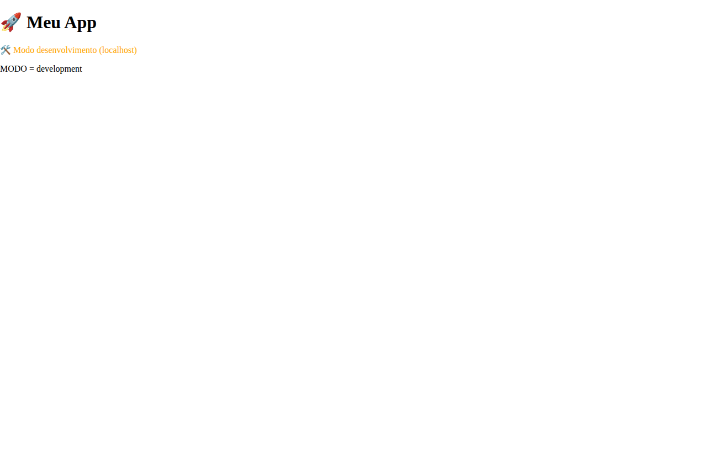

Deploy na Vercel: push no GitHub e no ar
Até aqui o app da Ana vivia só no localhost dela. Hoje ela vai colocar no ar de verdade: basta conectar o repositório do GitHub na Vercel e cada git push na main vira um deploy automático de produção — e cada branch ou Pull Request ganha uma URL de preview para testar antes. Nesta aula você faz esse caminho inteiro.
- Criar o projeto na Vercel apontando para o repositório do GitHub
main→ produção automática; branch/PR → preview deployment com URL própria- Build command padrão (
next build), Node version e pasta de saída (.next) - CLI:
npm i -g vercel,vercel(preview local) evercel --prod - Ler os logs de build quando dá erro e setar variáveis de ambiente por escopo (Production/Preview/Development)
- Rollback instantâneo para um deploy anterior
A ideia: a loja com vitrine na rua e a versão de teste nos fundos
Publicar na Vercel é como abrir uma loja: a endereço principal (meusite.vercel.app, ou o domínio próprio) é a vitrine de produção — só entra o que passou no controle de qualidade, ou seja, o que está na branch main depois de um push. Já cada branch nova ganha uma URL temporária nos fundos da loja (o preview), onde o time testa a reforma antes de trocar a vitrine de verdade. E se a vitrine nova quebrar, você volta para a anterior em um clique (rollback) — sem rebuild, porque cada deploy guarda uma cópia pronta.
O fluxo inteiro é: git push origin main → o GitHub avisa a Vercel → a Vercel clona o código, roda npm install e next build numa máquina limpa → gera os estáticos, testa e publica → em segundos a URL de produção já serve a versão nova. Se o build falhar, a produção continua no ar com a versão anterior — o deploy novo só entra se o build passar inteiro.
Ana inaugura a loja de verdade: o depósito vira vitrine na rua principal
Durante semanas a loja da Ana funcionou só no depósito (localhost). Chegou a hora de inaugurar na rua principal: ela sobe o projeto no GitHub (a planta do prédio vai para o cartório público) e a Vercel, conectada ao repositório, constrói e publica o site a cada git push — cada branch vira uma URL de preview, e o main vira a produção. Sem servidor para configurar, sem FTP, sem "funcionou na minha máquina".
A cada push a Vercel roda o next build, gera as páginas estáticas, configura HTTPS e CDN (a loja com vitrine em várias esquinas do mundo, servida do lugar mais perto do cliente) e deixa o site no ar em minutos. Se algo quebrar no build, a versão anterior continua no ar — a inauguração nunca deixa a loja vazia.
Passo a passo
# 1) suba o projeto pro GitHub (se ainda não subiu) git init git add . git commit -m "app next.js pronto" git remote add origin https://github.com/ana/meu-app.git git push -u origin main
1. vercel.com → Add New → Project 2. Import Git Repository → escolha ana/meu-app 3. Framework Preset: Next.js (detectado sozinho) Build Command: next build Output: .next 4. Environment Variables → cole as variáveis (próxima aula detalha) 5. Deploy → em ~1 min: https://meu-app.vercel.app no ar 🎉
# CLI opcional: preview local e deploy manual npm i -g vercel vercel login vercel # gera URL de preview (branch atual) vercel --prod # publica em produção direto pela CLI
{ // opcional: ajustes do projeto
"buildCommand": "next build",
"installCommand": "npm install",
"framework": "nextjs"
}
Branch → preview, main → produção
git checkout -b nova-home # … edita, commita … git push origin nova-home → Vercel cria: https://meu-app-git-nova-home-ana.vercel.app (preview) → abre PR no GitHub: cada commit novo ganha outro preview (bot da Vercel comenta a URL) → merge na main: https://meu-app.vercel.app atualizada (produção)
Missão: o código abaixo simula o "modo" do app: em desenvolvimento ele mostra um aviso amarelo; em produção, o selo verde. Mude a constante const MODO = 'development' para const MODO = 'production' (é o que a Vercel seta automaticamente com NODE_ENV=production no build de produção). Rode para ver o selo mudar. Depois clique em Verificar missão.
const MODO = 'development'; // a Vercel seta 'production' no deploy de verdade
function App() {
const prod = MODO === 'production';
return (
<div>
<h1>🚀 Meu App</h1>
{prod
? <p style={{color:'green'}}>✅ Rodando em PRODUÇÃO (Vercel, NODE_ENV=production)</p>
: <p style={{color:'orange'}}>🛠️ Modo desenvolvimento (localhost)</p>}
<p>MODO = {MODO}</p>
</div>
);
}const MODO = 'production';
function App() {
const prod = MODO === 'production';
return (
<div>
<h1>🚀 Meu App</h1>
{prod
? <p style={{color:'green'}}>✅ Rodando em PRODUÇÃO (Vercel, NODE_ENV=production)</p>
: <p style={{color:'orange'}}>🛠️ Modo desenvolvimento (localhost)</p>}
<p>MODO = {MODO}</p>
</div>
);
}
Quando dá errado
package.json → campo "engines") ou arquivo commitado errado ( faltou .gitignore com .env.local — aula de variáveis). Veja em: Vercel → Deploy → Build Logs:npm ERR! code ENOENT … / Failed at the meu-app@1.0.0 build script.
→ rode `npm run build` localmente antes de pushar; confira a versão do Node
(package.json → "engines": { "node": "20.x" }) e o .gitignore.
.env.local dela) ou código que só funciona com window no SSR. A Vercel mostra o erro em Runtime Logs:Error: process.env.NEXT_PUBLIC_API_URL is undefined → set a variável em Vercel → Settings → Environment Variables (Production + Preview) e faça um redeploy.
Exercícios
Depois de conectar o GitHub na Vercel, o que dispara um deploy de produção?
Uma branch nova com uma feature em teste ganha:
Se o build falhar na Vercel, o que acontece com a produção atual?
Complete o comando de push que manda o código para o GitHub:
Complete o comando da CLI que publica direto em produção: